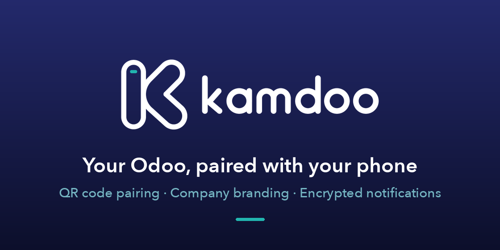

Pair the Kamdoo mobile app with this database by QR code, and show your company's name, logo and colour in the app.

A new entry in the user menu shows a QR code that the Kamdoo app scans. It holds a one-time token, valid for five minutes, never a login or a password. Administrators also find it in Settings › Kamdoo mobile app.
The app shows your company's name, logo and colour, read before sign-in
from the public route /kamdoo/info. It returns the Odoo and module versions, the database
name and the company's name, colour and logo: what the public login page already shows, nothing more.
When an Odoo page is opened from the app, it gets larger touch targets and a layout suited to a phone screen. Nothing changes for people using Odoo in a browser.
Private messages, mentions and Inbox items reach the phone, end-to-end
encrypted. Odoo 14 has no Web Push: this module adds it the way Odoo 17 does
(RFC 8291 encryption, RFC 8292 VAPID signature). If the Python cryptography package is
missing, a pure-Python implementation of the same algorithms is used.
kamdoo_connect folder into your addons path, update the Apps list and install
Kamdoo Mobile Connector.Requirements: Odoo 14.0, Community or Enterprise. Depends on
web, base_setup, mail.
requests package (present in the official Odoo images).Odoo is a trademark of Odoo S.A. Kamdoo is published by Kamka IT and is not affiliated with Odoo S.A.
Questions or bug reports: contact@kamka-it.com